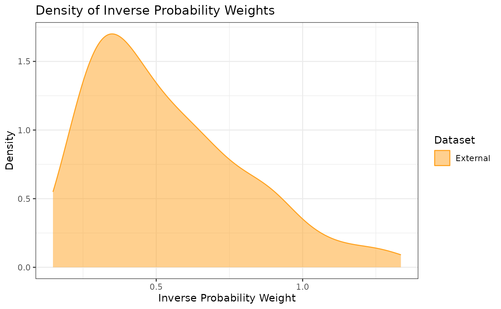

Introduction and Data Description
In this example, we illustrate how to use Bayesian dynamic borrowing (BDB) with the inclusion of inverse probability weighting to balance baseline covariate distributions between external and internal datasets. This particular example considers a hypothetical trial with a time-to-event outcome which we assume to follow a Weibull distribution; i.e., \(Y_i \sim \mbox{Weibull}(\alpha, \sigma)\) where \[f(y_i \mid \alpha, \sigma) = \left( \frac{\alpha}{\sigma} \right) \left( \frac{y_i}{\sigma} \right)^{\alpha - 1} \exp \left( -\left( \frac{y_i}{\sigma} \right)^\alpha \right).\] Define \(\boldsymbol{\theta} = \{\log(\alpha), \beta\}\) where \(\beta = -\log(\sigma)\) is the intercept (i.e., log-inverse-scale) parameter of a Weibull proportional hazards regression model and \(\alpha\) is the shape parameter.
Our objective is to use BDB with IPWs to construct a posterior distribution for the probability of surviving past time \(t\) in the control arm, \(S_C(t | \boldsymbol{\theta})\) (hereafter denoted as \(S_C(t)\) for notational convenience). For each treatment arm, we will define our prior distributions with respect to \(\boldsymbol{\theta}\) before eventually obtaining MCMC samples from the posterior distributions of \(S_C(t)\) and \(S_T(t)\) (i.e., the survival probability at time \(t\) for the active treatment arm). In this example, suppose we are interested in survival probabilities at \(t=12\) months.
We will use simulated internal and external datasets from the package where each dataset has a time-to-event response variable (the observed time at which a participant either had an event or was censored), an event indicator (1: event; 0: censored), the enrollment time in the study, the total time since the start of the study, and four baseline covariates which we will balance.
The external control dataset has a sample size of 150 participants, and the distributions of the four covariates are as follows: - Covariate 1: normal with a mean and standard deviation of approximately 65 and 10, respectively - Covariate 2: binary (0 vs. 1) with approximately 30% of participants with level 1 - Covariate 3: binary (0 vs. 1) with approximately 40% of participants with level 1 - Covariate 4: binary (0 vs. 1) with approximately 50% of participants with level 1
The internal dataset has 160 participants with 80 participants in each of the control arm and the active treatment arms. The covariate distributions of each arm are as follows: - Covariate 1: normal with a mean and standard deviation of approximately 62 and 8, respectively - Covariate 2: binary (0 vs. 1) with approximately 40% of participants with level 1 - Covariate 3: binary (0 vs. 1) with approximately 40% of participants with level 1 - Covariate 4: binary (0 vs. 1) with approximately 60% of participants with level 1
library(tibble)
library(distributional)
library(dplyr)
#>
#> Attaching package: 'dplyr'
#> The following objects are masked from 'package:stats':
#>
#> filter, lag
#> The following objects are masked from 'package:base':
#>
#> intersect, setdiff, setequal, union
library(ggplot2)
library(rstan)
#> Loading required package: StanHeaders
#>
#> rstan version 2.32.7 (Stan version 2.32.2)
#> For execution on a local, multicore CPU with excess RAM we recommend calling
#> options(mc.cores = parallel::detectCores()).
#> To avoid recompilation of unchanged Stan programs, we recommend calling
#> rstan_options(auto_write = TRUE)
#> For within-chain threading using `reduce_sum()` or `map_rect()` Stan functions,
#> change `threads_per_chain` option:
#> rstan_options(threads_per_chain = 1)
set.seed(1234)
summary(int_tte_df)
#> subjid y enr_time total_time
#> Min. : 1.00 Min. : 0.7026 Min. :0.01367 Min. : 1.309
#> 1st Qu.: 40.75 1st Qu.: 6.4188 1st Qu.:0.83781 1st Qu.: 7.268
#> Median : 80.50 Median :12.1179 Median :1.27502 Median :14.245
#> Mean : 80.50 Mean : 9.6651 Mean :1.19144 Mean :15.427
#> 3rd Qu.:120.25 3rd Qu.:12.7287 3rd Qu.:1.58949 3rd Qu.:20.699
#> Max. :160.00 Max. :13.9913 Max. :1.98912 Max. :58.644
#> event trt cov1 cov2 cov3
#> Min. :0.00 Min. :0.0 Min. :46.00 Min. :0.0000 Min. :0.0000
#> 1st Qu.:0.00 1st Qu.:0.0 1st Qu.:57.00 1st Qu.:0.0000 1st Qu.:0.0000
#> Median :0.00 Median :0.5 Median :62.00 Median :0.0000 Median :0.0000
#> Mean :0.45 Mean :0.5 Mean :61.83 Mean :0.3688 Mean :0.3625
#> 3rd Qu.:1.00 3rd Qu.:1.0 3rd Qu.:67.00 3rd Qu.:1.0000 3rd Qu.:1.0000
#> Max. :1.00 Max. :1.0 Max. :85.00 Max. :1.0000 Max. :1.0000
#> cov4
#> Min. :0.0000
#> 1st Qu.:0.0000
#> Median :1.0000
#> Mean :0.5563
#> 3rd Qu.:1.0000
#> Max. :1.0000
summary(ex_tte_df)
#> subjid y enr_time total_time
#> Min. : 1.00 Min. : 0.05804 Min. :0.005329 Min. : 1.191
#> 1st Qu.: 38.25 1st Qu.: 4.45983 1st Qu.:0.857692 1st Qu.: 5.782
#> Median : 75.50 Median : 9.42004 Median :1.308708 Median :10.576
#> Mean : 75.50 Mean : 8.58877 Mean :1.232657 Mean :12.533
#> 3rd Qu.:112.75 3rd Qu.:12.71370 3rd Qu.:1.673582 3rd Qu.:16.549
#> Max. :150.00 Max. :14.00703 Max. :1.975702 Max. :64.793
#> event cov1 cov2 cov3
#> Min. :0.0000 Min. :37.00 Min. :0.0000 Min. :0.0000
#> 1st Qu.:0.0000 1st Qu.:58.00 1st Qu.:0.0000 1st Qu.:0.0000
#> Median :1.0000 Median :64.00 Median :0.0000 Median :0.0000
#> Mean :0.6267 Mean :64.28 Mean :0.3533 Mean :0.4533
#> 3rd Qu.:1.0000 3rd Qu.:70.00 3rd Qu.:1.0000 3rd Qu.:1.0000
#> Max. :1.0000 Max. :90.00 Max. :1.0000 Max. :1.0000
#> cov4
#> Min. :0.0000
#> 1st Qu.:0.0000
#> Median :0.0000
#> Mean :0.4733
#> 3rd Qu.:1.0000
#> Max. :1.0000Propensity Scores and Inverse Probability Weights
With the covariate data from both the external and internal datasets,
we can calculate the propensity scores and ATT inverse probability
weights (IPWs) for the internal and external control participants using
the calc_prop_scr function. This creates a propensity score
object which we can use for calculating an approximate inverse
probability weighted power prior in the next step.
Note: when reading external and internal datasets into
calc_prop_scr, be sure to include only the arms in which
you want to balance the covariate distributions (typically the internal
and external control arms). In this example, we want to balance
the covariate distributions of the external control arm to be similar to
those of the internal control arm, so we will exclude the internal
active treatment arm data from this function.
ps_obj <- calc_prop_scr(internal_df = filter(int_tte_df, trt == 0),
external_df = ex_tte_df,
id_col = subjid,
model = ~ cov1 + cov2 + cov3 + cov4)
ps_obj
#>
#> ── Model ───────────────────────────────────────────────────────────────────────
#> • cov1 + cov2 + cov3 + cov4
#>
#> ── Propensity Scores and Weights ───────────────────────────────────────────────
#> • Effective sample size of the external arm: 81
#> # A tibble: 150 × 4
#> subjid Internal `Propensity Score` `Inverse Probability Weight`
#> <int> <lgl> <dbl> <dbl>
#> 1 1 FALSE 0.333 0.500
#> 2 2 FALSE 0.288 0.405
#> 3 3 FALSE 0.539 1.17
#> 4 4 FALSE 0.546 1.20
#> 5 5 FALSE 0.344 0.524
#> 6 6 FALSE 0.393 0.646
#> 7 7 FALSE 0.390 0.639
#> 8 8 FALSE 0.340 0.515
#> 9 9 FALSE 0.227 0.294
#> 10 10 FALSE 0.280 0.389
#> # ℹ 140 more rows
#>
#> ── Absolute Standardized Mean Difference ───────────────────────────────────────
#> # A tibble: 4 × 3
#> covariate diff_unadj diff_adj
#> <chr> <dbl> <dbl>
#> 1 cov1 0.339 0.0461
#> 2 cov2 0.0450 0.0204
#> 3 cov3 0.160 0.000791
#> 4 cov4 0.308 0.00857In order to check the suitability of the external data, we can create
a variety of diagnostic plots. The first plot we might want is a
histogram of the overlapping propensity score distributions from both
datasets. To get this, we use the prop_scr_hist function.
This function takes in the propensity score object made in the previous
step, and we can optionally supply the variable we want to look at
(either the propensity score or the IPW). By default, it will plot the
propensity scores. Additionally, we can look at the densities rather
than histograms by using the prop_scr_dens function. When
looking at the IPWs with either the histogram or the density functions,
it is important to note that only the IPWs for external control
participants will be shown because the ATT IPWs for all internal control
participants are equal to 1.
prop_scr_hist(ps_obj)
prop_scr_dens(ps_obj, variable = "ipw")
The final plot we might want to look at is a love plot to visualize
the absolute standardized mean differences (both unadjusted and adjusted
by the IPWs) of the covariates between the internal and external data.
To do this, we use the prop_scr_love function. Like the
previous function, the only required parameter for this function is the
propensity score object, but we can also provide a location along the
x-axis for a vertical reference line.
prop_scr_love(ps_obj, reference_line = 0.1)
Approximate Inverse Probability Weighted Power Prior
Now that we have created and assessed our propensity score object, we
can read it into the calc_power_prior_weibull function to
calculate an approximate inverse probability weighted power prior for
\(\boldsymbol{\theta}\) under the
control arm, which we denote as \(\boldsymbol{\theta}_C = \{\log(\alpha_C),
\beta_C\}\). Specifically, we approximate the power prior with a
bivariate normal distribution using one of two approximation methods:
(1) Laplace approximation or (2) estimation of the mean vector and
covariance matrix using MCMC samples from the unnormalized power prior
(see the details section of the calc_power_prior_weibull
documentation for more information). In this example, we use the Laplace
approximation which is considerably faster than the MCMC approach.
To approximate the power prior, we need to supply the following information:
weighted object (the propensity score object we created above)
response variable name (in this case \(y\))
event indicator variable name (in this case \(event\))
initial prior for the intercept parameter, in the form of a normal distributional object (e.g., \(\mbox{N}(0, \mbox{sd} = 10)\))
scale hyperparameter for the half-normal initial prior for the shape parameter
approximation method (either “Laplace” or “MCMC”)
pwr_prior <- calc_power_prior_weibull(ps_obj,
response = y,
event = event,
intercept = dist_normal(0, 10),
shape = 50,
approximation = "Laplace")
plot_dist(pwr_prior)
Inverse Probability Weighted Robust Mixture Prior
We can robustify the approximate multivariate normal (MVN) power
prior for \(\boldsymbol{\theta}_C\) by
adding a vague component to create a robust mixture prior (RMP). We
define the vague component to be a MVN distribution with the same mean
vector as the approximate power prior and a covariance matrix that is
equal to the covariance matrix of the approximate power prior multiplied
by \(r_{ex}\), where \(r_{ex}\) denotes the number of observed
events in the external control arm. To construct this RMP, we can use
either the robustify_norm or robustify_mvnorm
functions, and we place 0.5 weight on each component. The two components
of the resulting RMP are labeled as “informative” and “vague”.
We can print the mean vectors and covariance matrices of each MVN
component using the functions mix_means and
mix_sigmas, respectively.
r_external <- sum(ex_tte_df$event) # number of observed events
mix_prior <- robustify_mvnorm(pwr_prior, r_external, weights = c(0.5, 0.5)) # RMP
mix_means(mix_prior) # mean vectors
#> $informative
#> [1] 0.2940907 -2.5655689
#>
#> $vague
#> [1] 0.2940907 -2.5655689
mix_sigmas(mix_prior) # mean covariance matrices
#> $informative
#> [,1] [,2]
#> [1,] 0.016251652 0.003325476
#> [2,] 0.003325476 0.011868788
#>
#> $vague
#> [,1] [,2]
#> [1,] 1.5276553 0.3125948
#> [2,] 0.3125948 1.1156660
#plot_dist(mix_prior)Posterior Distributions
To create a posterior distribution for \(\boldsymbol{\theta}_C\), we can pass the
resulting RMP and the internal control data to the
calc_post_weibull function which returns a stanfit object
from which we can extract the MCMC samples for the control parameters.
In addition to returning posterior samples for \(\log(\alpha_C)\) and \(\beta_C\), the function returns posterior
samples for the marginal survival probability \(S_C(t)\) where the time(s) \(t\) can be specified as either a scalar or
vector of numbers using the analysis_time argument.
Note: when reading internal data directly into
calc_post_weibull, be sure to include only the arm of
interest (e.g., the internal control arm if creating a posterior
distribution for \(\boldsymbol{\theta}_C\)).
post_control <- calc_post_weibull(filter(int_tte_df, trt == 0),
response = y,
event = event,
prior = mix_prior,
analysis_time = 12)
summary(post_control)$summary
#> mean se_mean sd 2.5% 25%
#> beta0 -2.6887252 0.0007416549 0.08973077 -2.8896461 -2.7388799
#> log_alpha 0.3621925 0.0007810625 0.10469515 0.1575300 0.2930159
#> alpha 1.4444037 0.0011479498 0.15277470 1.1706159 1.3404641
#> survProb[1] 0.4730793 0.0003307721 0.04382526 0.3949843 0.4439155
#> lp__ -148.4751404 0.0118123153 1.15276979 -151.6658488 -148.8919240
#> 50% 75% 97.5% n_eff Rhat
#> beta0 -2.682493 -2.6292044 -2.5358069 14637.910 1.0000966
#> log_alpha 0.361368 0.4291120 0.5731935 17967.248 0.9999709
#> alpha 1.435292 1.5358930 1.7739230 17711.572 0.9999736
#> survProb[1] 0.470524 0.4987585 0.5702913 17554.608 1.0001324
#> lp__ -148.108591 -147.6609827 -147.3811442 9523.906 0.9999708
#plot_dist(post_control)We can extract and plot the posterior samples of \(S_C(t)\). Here, we plot the samples using a
histogram, however, additional posterior plots (e.g., density curves,
trace plots) can easily be obtained using the bayesplot
package.
surv_prob_control <- as.data.frame(extract(post_control, pars = c("survProb")))[,1]
ggplot(data.frame(samp = surv_prob_control), aes(x = samp)) +
labs(y = "Density", x = expression(paste(S[C], "(t=12)"))) +
ggtitle(expression(paste("Posterior Samples of ", S[C], "(t=12)"))) +
geom_histogram(aes(y = after_stat(density)), color = "#5398BE", fill = "#5398BE",
position = "identity", binwidth = .01, alpha = 0.5) +
geom_density(color = "black") +
coord_cartesian(xlim = c(-0.2, 0.8)) +
theme_bw()Next, we create a posterior distribution for the survival probability
\(S_T(t)\) for the active treatment arm
at time \(t=12\) by reading the
internal data for the corresponding arm into the
calc_post_weibull function. In this case, we use the vague
component of the RMP as our MVN prior.
As noted earlier, be sure to read in only the data for the internal active treatment arm while excluding the internal control data.
vague_prior <- dist_multivariate_normal(mu = list(mix_means(mix_prior)[[2]]),
sigma = list(mix_sigmas(mix_prior)[[2]]))
post_treated <- calc_post_weibull(filter(int_tte_df, trt == 1),
response = y,
event = event,
prior = vague_prior,
analysis_time = 12)
summary(post_treated)$summary
#> mean se_mean sd 2.5% 25%
#> beta0 -2.9467394 0.0014810376 0.14726947 -3.26991147 -3.0353030
#> log_alpha 0.3526892 0.0015533881 0.15956920 0.02989851 0.2470030
#> alpha 1.4409985 0.0022038801 0.22910480 1.03034996 1.2801829
#> survProb[1] 0.5903455 0.0003800737 0.05223538 0.48591817 0.5548152
#> lp__ -141.7011034 0.0098800342 1.02027824 -144.47671402 -142.0942676
#> 50% 75% 97.5% n_eff Rhat
#> beta0 -2.9322638 -2.8440318 -2.6968268 9887.653 0.9999780
#> log_alpha 0.3568371 0.4618120 0.6563501 10552.082 0.9999734
#> alpha 1.4288031 1.5869469 1.9277434 10806.684 0.9999703
#> survProb[1] 0.5911443 0.6259527 0.6894547 18888.340 1.0000317
#> lp__ -141.3906390 -140.9749554 -140.7038264 10664.005 0.9999849
#plot_dist(post_treated)As was previously done, we can extract and plot the posterior samples of \(S_T(t)\).
surv_prob_treated <- as.data.frame(extract(post_treated, pars = c("survProb")))[,1]
ggplot(data.frame(samp = surv_prob_treated), aes(x = samp)) +
labs(y = "Density", x = expression(paste(S[T], "(t=12)"))) +
ggtitle(expression(paste("Posterior Samples of ", S[T], "(t=12)"))) +
geom_histogram(aes(y = after_stat(density)), color = "#FFA21F", fill = "#FFA21F",
position = "identity", binwidth = .01, alpha = 0.5) +
geom_density(color = "black") +
coord_cartesian(xlim = c(-0.2, 0.8)) +
theme_bw()We define our marginal treatment effect to be the difference in survival probabilities at 12 months between the active treatment and control arms (i.e., \(S_T(t=12) - S_C(t=12)\)). We can obtain a sample from the posterior distribution for \(S_T(t=12) - S_C(t=12)\) by subtracting the posterior sample of \(S_C(t=12)\) from the posterior sample of \(S_T(t=12)\).
samp_trt_diff <- surv_prob_treated - surv_prob_control
ggplot(data.frame(samp = samp_trt_diff), aes(x = samp)) +
labs(y = "Density", x = expression(paste(S[T], "(t=12) - ", S[C], "(t=12)"))) +
ggtitle(expression(paste("Posterior Samples of ", S[T],
"(t=12) - ", S[C], "(t=12)"))) +
geom_histogram(aes(y = after_stat(density)), color = "#FF0000", fill = "#FF0000",
position = "identity", binwidth = .01, alpha = 0.5) +
geom_density(color = "black") +
coord_cartesian(xlim = c(-0.2, 0.8)) +
theme_bw()Posterior Summary Statistics
Suppose we want to test the hypotheses \(H_0: S_T(t=12) - S_C(t=12) \le 0\) versus \(H_1: S_T(t=12) - S_C(t=12) > 0\). We can use our posterior sample for \(S_T(t=12) - S_C(t=12)\) to calculate the posterior probability \(Pr(S_T(t=12) - S_C(t=12) > 0 \mid D)\) (i.e., the probability in favor of \(H_1\)), and we conclude that we have sufficient evidence in favor of the alternative hypothesis if \(Pr(S_T(t=12) - S_C(t=12) > 0 \mid D) > 0.975\).
mean(samp_trt_diff > 0)
#> [1] 0.9534667We see that this posterior probability is less than 0.975, and hence we do not have sufficient evidence in support of the alternative hypothesis.
With MCMC samples from our posterior distributions, we can calculate posterior summary statistics such as the mean, median, and standard deviation. As an example, we calculate these statistics using the posterior distribution for \(S_T(t=12) - S_C(t=12)\).
c(mean = mean(samp_trt_diff),
median = median(samp_trt_diff),
SD = sd(samp_trt_diff))
#> mean median SD
#> 0.11726619 0.11920218 0.06795424We can also calculate credible intervals using the
quantile function.
Lastly, we calculate the effective sample size of the posterior distribution for \(S_C(t=12)\) using the method by Pennello and Thompson (2008). To do so, we first must construct the posterior distribution of \(S_C(t=12)\) without borrowing from the external control data (e.g., using a vague prior).
post_ctrl_no_brrw <- calc_post_weibull(filter(int_tte_df, trt == 0),
response = y,
event = event,
prior = vague_prior,
analysis_time = 12)
surv_prob_ctrl_nb <- as.data.frame(extract(post_ctrl_no_brrw, pars = c("survProb")))[,1]
n_int_ctrl <- nrow(filter(int_tte_df, trt == 0)) # sample size of internal control arm
var_no_brrw <- var(surv_prob_ctrl_nb) # post variance of S_C(t) without borrowing
var_brrw <- var(surv_prob_control) # post variance of S_C(t) with borrowing
ess <- n_int_ctrl * var_no_brrw / var_brrw # effective sample size
ess
#> [1] 123.4881